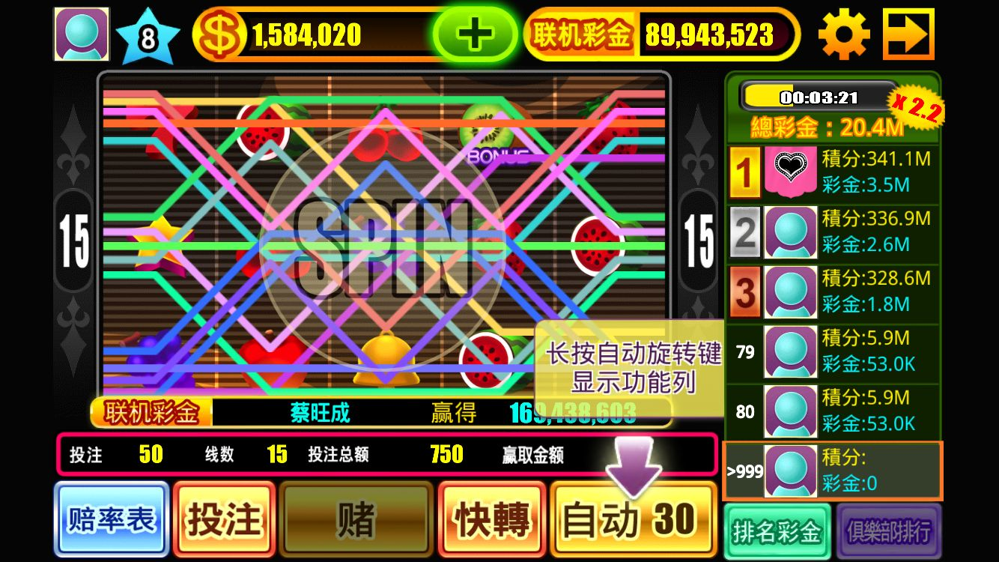

老虎机游戏赛事
0 条参与最近公司的 casino 游戏准备开老虎机赛事。
玩了市面上很多老虎机游戏，总结觉得有2种形式可以尝试：
一、彩票模式
规则
固定时间（例如半小时）一局，玩家交门票，进入房间，玩固定的轮数（例如10把），得到一个总赢取（彩票）。依据总赢取排序，瓜分奖池。总赢取不计入玩家资产。
奖池构成
玩家交的门票，参与的人越多，奖池越大。根据货币系统情况决定是否增发。
优点
玩家不存在先进入房间有优势的问题。大家在房间里都是凭固定轮数（例如10把）的成绩排名，后进的玩家只要 spin 完10把，也有机会拿到第一。
把赛事做成玩家之间的 PK，系统抽成拿台费，避免了系统和玩家的直接较量。
这是一种比较注重赌的体验的方式，让玩家之间的金币重新分配。
二、模拟赛事模式

规则
赛事每局5分钟，隔30秒开启下一局。玩家直接进入房间，就像玩普通老虎机一样，开始游戏，直到当前局的赛事结束，以玩家当前局的总赢取排序分奖池。玩家赢取的金币归自己。
奖池构成
系统抽成的大部分。
例如：系统在普通台机中抽成10%，在赛事台机中抽成20%，然后拿出15%放到奖池中，实际抽成5%。
这样看起来赛事台机的抽成比普通台机的比例还低，但是聚集起来的人数和排行榜名次给的刺激会让流水远远高于普通台机，低抽成比例，高流水，仍然能回收更多金币。同时，在比赛过程中，随着玩家押注更多，奖池越来越大，玩家得到的彩金数字会不断变大，也是很直接的刺激。
这里其实是把本应在玩家中线返点的金币拿到奖池中返点，还是系统和玩家之间较量。
根据货币系统情况决定是否增发.
优点
赛事可以直接嵌入到普通老虎机中，全天候开放。这是一种比较休闲的方式。
为什么我觉得低抽成比也能回收更多金币？
星城online在他们的台机中，会显示台机进入bonus的次数和台机吞币吐币的情况。
我们自己的游戏借鉴了这一点，也在游戏内披露了每台台机的这些信息。让玩家掌握这些信息后，玩家自己判断要在哪台台机中押注，企图进入 bonus 赢得大奖。这些信息让玩家有种自己掌握方法的感觉，流水有明显增加。
所以在这里我觉得展示出排名信息，即使低一些的抽水，玩家也能打出更高的流水。